My parents
They are no longer with me on this earth.
But their teachings and inspiration will always stay with me.
About me
I taught marketing. Then I decided to live it.
I started as a marketing professor. Today I help brands grow with social media, content and AI.

Who I am
Maher Khan is an AI Content Strategist, social media strategist and digital marketer based in San Jose, California, and an Adobe Brand Ambassador for Adobe Express and Adobe Firefly. I have 10+ years of experience in digital marketing. I started as an Assistant Professor of Marketing, and I designed the Agentic AI Marketing course at UCLA Extension.
My story
One step at a time. I taught marketing, then I practiced it. I built communities, managed social media for brands across 20+ industries, trained 20,000+ freelancers, and now I bring AI into content strategy and education.
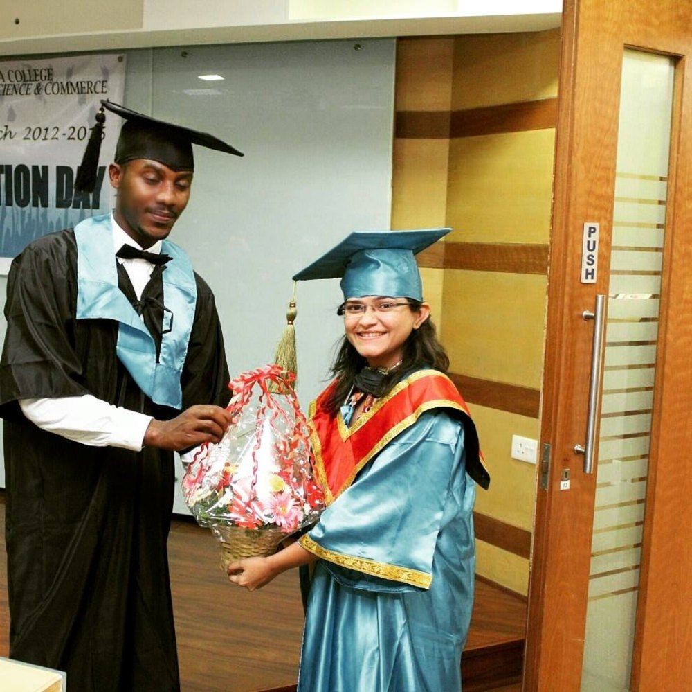
Chapter 01 · 2008 to 2015
I taught MBA students marketing, branding and consumer behavior.
I loved it. But I wanted to see marketing work in the real world, not only on a whiteboard.
So I stopped only teaching it. I started doing it.
Indian Creative Mothers
Chapter 02 · 2016
In 2016, I built my first website, Innovative Mothers.
It grew into Indian Creative Mothers, a community helping mothers turn their creativity into small businesses.
I wasn't teaching marketing anymore. I was watching it change lives.
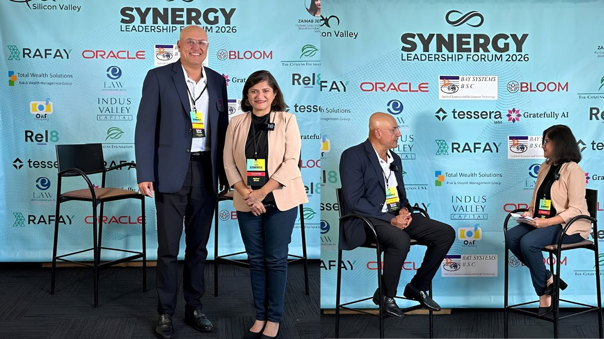
Chapter 03 · 2016 to present
As a social media strategist and digital marketer, I've worked with founders, coaches, startups and brands across 20+ industries.
As a Canva Coach, I trained 20,000+ Indian freelancers to design their own content.
Great marketing starts with understanding people.
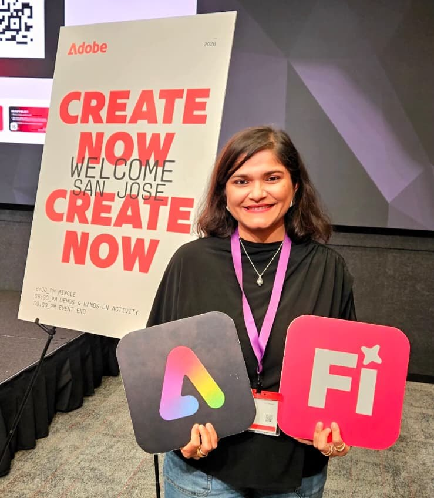
Chapter 04 · Now
I'm an Adobe Brand Ambassador for Adobe Express and Adobe Firefly.
I built an Agentic AI course for UCLA Extension and teach as a guest lecturer. At Stanford HAI, I designed Grandberry, an AI companion for older adults.
Technology does the heavy lifting. Imagination stays human.
What I believe
Taking the first step is the hardest part, and the most important.
You don't need every answer to begin. You need curiosity and the courage to try.
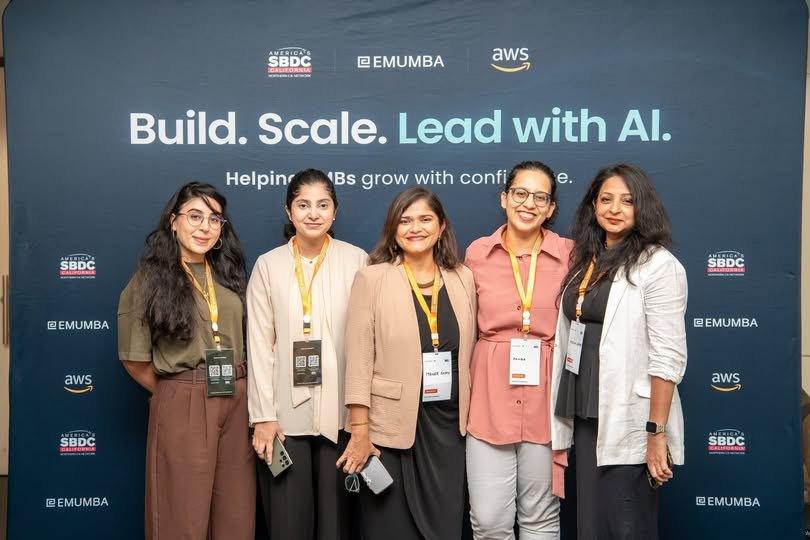
What I care about
Helping people turn ideas into action.
A woman building her first business. A founder finding customers. A professional trying AI for the first time.
I help turn possibilities into progress.
The people who inspire me
They are no longer with me on this earth.
But their teachings and inspiration will always stay with me.
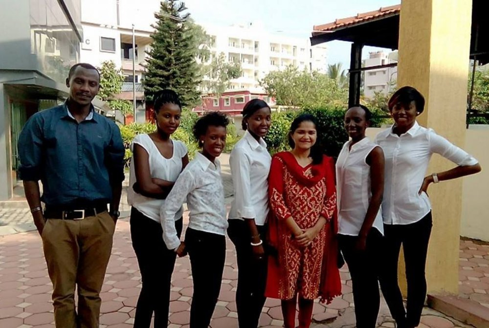
They taught me as much as I taught them.
Their curiosity still shapes everything I do today.
Life outside work
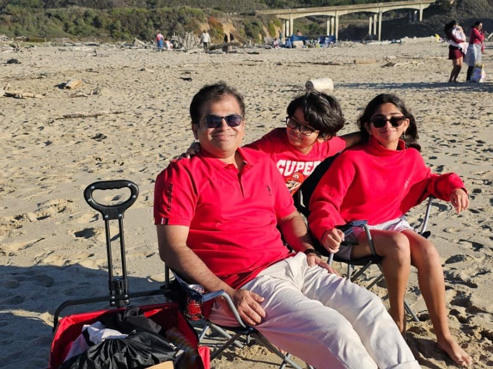
My husband and our two kids back every idea I have.
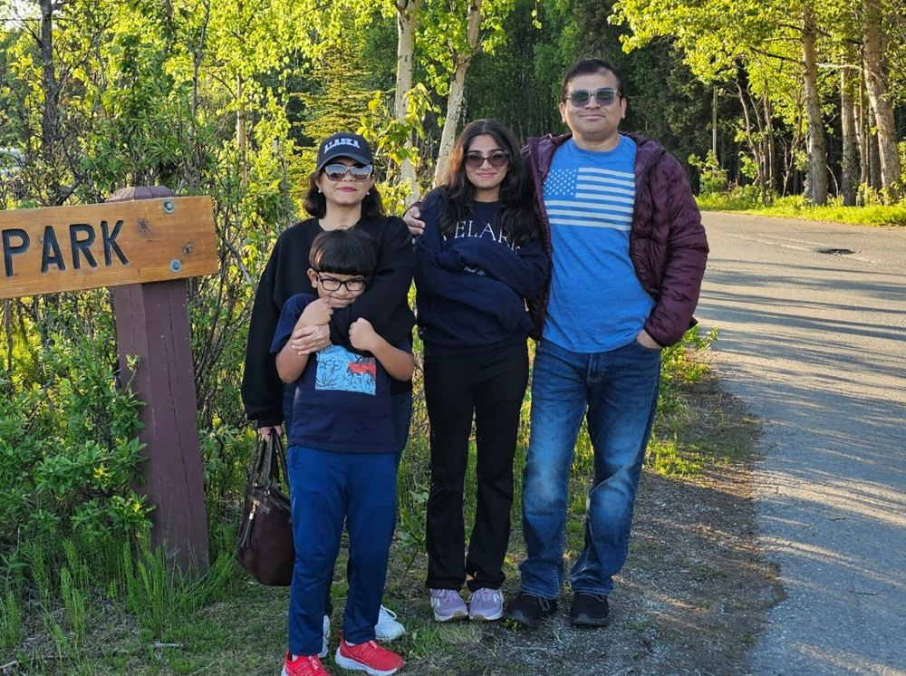
New places as a family. My best ideas show up away from my desk.
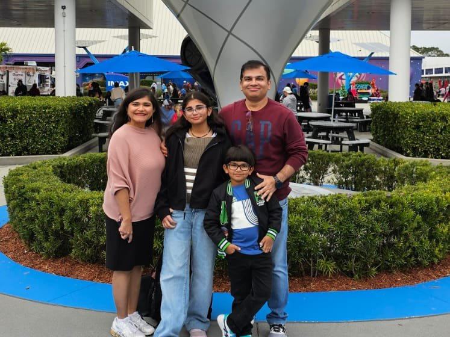
Space centers, museums, new tools. Curiosity runs in our family.
Fun facts
Botany, Chemistry and Zoology came before my MBA.
That one experiment changed my career.
They ran my cameras and editing when I started creating.
A milestone I still plan to reach.
Moments
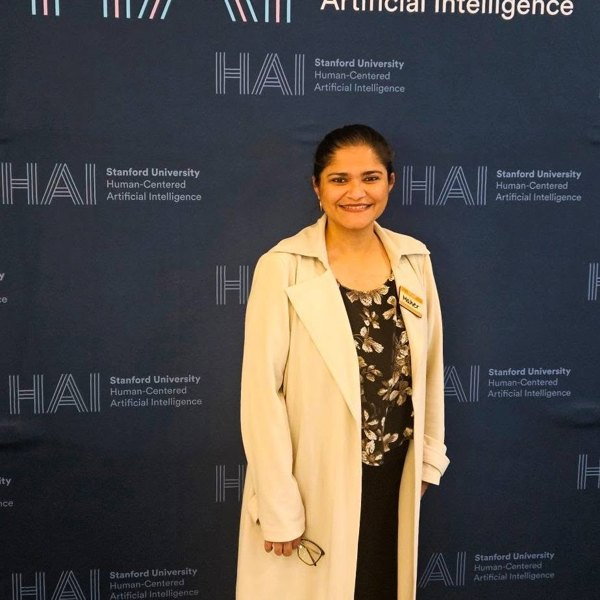
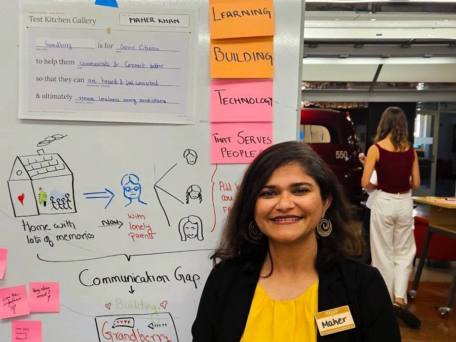
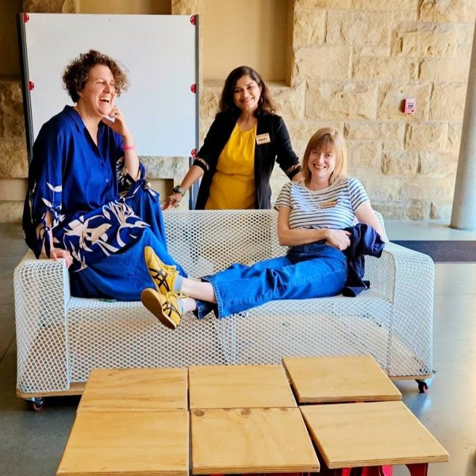
FAQ
Maher Khan is an AI Content Strategist, social media strategist and digital marketer based in San Jose, California, and an Adobe Brand Ambassador for Adobe Express and Adobe Firefly. She has 10+ years of experience in digital marketing, started her career as an Assistant Professor of Marketing, and designed the Agentic AI Marketing course at UCLA Extension.
Maher Khan is based in San Jose, California, in the San Francisco Bay Area and Silicon Valley. She works with teams and clients across the US and internationally, remotely or in person.
Maher was an Assistant Professor of Marketing, teaching MBA students marketing, branding and consumer behavior in India. Before her MBA in Marketing, she studied Botany, Chemistry and Zoology.
Indian Creative Mothers is a community Maher founded in 2016 to help mothers turn their creativity into small businesses. It has supported 100+ mothers, has 9,000+ members, and was nominated for the Digital Women Awards 2018 by SheThePeople.tv.
Grandberry is a human-centered AI companion concept for older adults and their families, designed by Maher during the Stanford HAI program. It helps seniors feel heard and connected. It's a working prototype, not a commercial product.
Let's connect